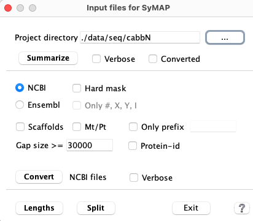

|
The input is one or more FASTA files of chromosome or scaffold sequences, with optional GFF formatted
annotation file(s).
| ▸ | As of v5.5.7, NCBI and Ensembl files can be loaded directly.
See Tested genomes for results on loading the files directly.
| | ▸ | The data behaves better in SyMAP if the files have been converted by xToSymap;
see NCBI and Ensembl.
xToSymap was added to the SyMAP tar file in release v5.5.7 and updated in v.5.5.8.
| | ▸ | If you are using files from another source, see Other.
|
The sequence file(s) must be FASTA format with one or more sequences.
For the FASTA format, the name of a sequence is the string immediately following the ">", e.g.
>Chr3 Oryza Sativa
GAATTCGAATTTGGGTAATGCTAATCAATACAGGTCAAAATCTATGTATTGAGTGGAATATACTGCAAAGTAATTACCTT
CTTCCAAAGGAAAGCATTCCTTCTCTCTTGTGGGACTAGCAGATGATCTCGCAGCCAAGACGTGACCACCCAAGGCTCAC
...
In this example, the sequence name is "Chr3" and the chromosome 3 sequence follows. The additional information
"Oryza Sativa" is ignored.
Important points in naming sequences for SyMAP:
| A.
|
Sequence names can only contain letters, numbers, and underscores.
Note: the GFF3 description
allows [a-zA-Z0-9.:^*$@!+_?-|]; a seqid must be renamed if it contains any character [.:^*$@!+?-|].
| | B.
|
The sequence names must exactly match those
used in the annotation files (first column), or the annotations will not be loaded.
| | C.
|
Use a consistent prefix such as "Chr" for all sequences,
then set 'Group prefix' to the prefix in project's
Parameter window.
| | D.
|
If there is not a consistent prefix, you may leave the 'Group prefix' blank;
beware, this can have unintended results, so should be avoided if possible.
Make the names short so they will not clutter the display. You may
need to rename your sequence, in which case, it must be done in the FASTA
and GFF files.
| | E.
|
The xToSymap convert
NCBI
and Ensembl programs
will create a short name for the sequences and provide the renaming in both
the FASTA and GFF files. One of these may also work for files created elsewhere;
see Other inputs.
|
Masking: Decide whether the sequences need to be repeat masked.
- SyMAP does not perform the repeat-masking so must be done with another program.
However, you may obtain masked sequences from NCBI or Ensembl.
▸NCBI provides soft-masked sequences where the xToSymap
NCBI interface provides the option
to change it to hard-masked.
▸Ensembl provides both soft and hard-masked sequences.
- Masking reduces alignment time and false-positive hits,
but also runs a risk of concealing true hits due to inaccurate masking.
Masking is not really necessary unless the genome is highly repetitive
and those repeats are shared with other genomes being aligned.
(Repeats cause particular trouble for self-alignments,
see self-alignments in SyMAP).
- Occasionally, MUMmer fails aligning sequences
(see MUMmer, which explains detection and solutions
for known reasons for failure).
Another masking option, which is available if you have gene
annotation, is to mask out everything but the annotated genes. You
can enable the Mask non-genes option on the project's
Parameter window;
turn it on before doing the alignments.
Annotation files should be in
gff3 format,
which is a tab-delimited file of 9 columns.
| Seqid
| The first column must exactly match the sequence names in the FASTA files.
| | Type
| The third column determines how SyMAP uses the entry.
Only types 'gene', 'mRNA', 'exon', 'gap' or 'centromere' are recognized.
| | Attribute
| The last column contains "keyword=value" pairs describing the annotation.
| a. | The genes/mRNAs must have a ID= keyword,
and your mRNAs/exons must have a Parent= keyword.
| | b. | For genes, all attributes are saved in the database for viewing.
You can set which attributes keywords to save; open the
project's Parameter window,
look for parameter Anno keywords.
|
| | Order
| Each mRNA and its exons must come after the parent gene and before the next gene.
The mRNA must be before its exons, but it is okay if all the mRNAs for a gene are listed first.
Exons are entered in the order they are found; they must be either ascending or descending.
|
For example (extracted from Ensembl gff3 file):
1 araport11 gene 11649 13714 . - . ID=gene:AT1G01030;Name=NGA3;....
1 araport11 mRNA 11649 13714 . - . ID=transcript:AT1G01030.2;Parent=gene:AT1G01030....
1 araport11 three_prime_UTR 11649 11863 . - . Parent=transcript:AT...
1 araport11 exon 11649 12354 . - . Parent=transcript:AT1G01030.2....
1 araport11 CDS 11864 12354 . - 2 ID=CDS:AT1G01030.2;Parent=transc...
1 araport11 CDS 12424 12940 . - 0 ID=CDS:AT1G01030.2;Parent=transc...
1 araport11 exon 12424 13173 . - . Parent=transcript:AT1G01030.2....
1 araport11 five_prime_UTR 12941 13173 . - . Parent=transcript:AT...
1 araport11 exon 13335 13714 . - . Parent=transcript:AT1G01030.2....
1 araport11 five_prime_UTR 13335 13714 . - . Parent=transcript:AT...
1 araport11 mRNA 11649 13714 . - . ID=transcript:AT1G01030.1;Parent=gene:AT1G01030....
1 araport11 three_prime_UTR 11649 11863 . - . Parent=transcript:AT...
1 araport11 exon 11649 13173 . - . Parent=transcript:AT1G01030.1....
1 araport11 CDS 11864 12940 . - 0 ID=CDS:AT1G01030.1;Parent=transc...
1 araport11 five_prime_UTR 12941 13173 . - . Parent=transcript:AT...
1 araport11 exon 13335 13714 . - . Parent=transcript:AT1G01030.1....
1 araport11 five_prime_UTR 13335 13714 . - . Parent=transcript:AT...
The following will be saved in the SyMAP database for this record, where the exons are
associated with the gene via a MySQL index:
1 gene 11649 13714 ID=AT1G01030;Name=NGA3;rnaID=AT1G01030.2;desc=....
1 exon 11649 12354
1 exon 12424 13173
1 exon 13335 13714
Perform the following steps:
| 1.
| Summarize
| This will output basic statistics. Run this first to make sure your input is valid.
| | 2.
| Convert
| The convert NCBI or Ensembl create the /sequence and /annotation sub-directories
with files ready for input to symap. These
scripts first remove any existing FASTA and GFF files from the sub-directories.
| | 3.
| Summarize
with Converted
| Run this to make sure that the conversion worked as you expected.
| | Optional. The following run on the files in the /sequence and /annotation sub-directories.
| | 4.
| Lengths
| Run it to see if you need to set a Group prefix in symap.
| | 5.
| Split
| Splits the converted file genomic.fna and anno.gff into a file per chromosome.
|
NOTE: The NCBI and Ensembl files have variations and I may not have accounted for them all.
If Convert does not work as you wish, the files ConvertNCBI.java and ConvertEnsembl.java
are available for editing; see Edit.
|
Project Directory: All options and function buttons will be disabled until a project directory is selected.
The Converted checkbox, Lengths and Split are
disabled when there is no /sequence sub-directory.
When NCBI is selected, all the options relevant to it will be enabled.
Similarly for Ensembl. Both input
NCBI and Ensembl have one option that is input-specific and the rest work for both.
| 
|
Summarize will look in the following directories for the FASTA and optional GFF files
to process, in the following order:
- Directly under the project's directory, e.g.
symap_5/data/seq/cabb
Brassica_oleracea.BOL.dna_sm.toplevel.fa.gz
Brassica_oleracea.BOL.59.gff3.gz
- The project's ncbi_datasets/data/<sub-directory>, e.g.
symap_5/data/seq/cabb/data/seq/ncbi_dataset/data/GCF_000695525.1
GCF_000695525.1_BOL_genomic.fna
genomic.gff
- The project's sub-directories /sequence and /annotation, e.g
symap_5/data/seq/cabb
sequence/
genomic.fna
annotation/
anno.gff
The FASTA file must end in .fas, .fa, .fna, .fasta, .seq (with optional .gz).
The GFF file must end in .gff or .gff3 (with optional .gz).
Summarize with Converted checked uses the third option,
i.e. presumably the converted files.
The following is an example terminal and log file output:
------ Summary for ./data/seq/cabbN ------
Log file to ./data/seq/cabbN/xSummary.log
Sequence directory: ./data/seq/cabbN/ncbi_dataset/data/GCF_000695525.1 29-Jul-2024 10:16
GCF_000695525.1_BOL_genomic.fna
Annotation directory: ./data/seq/cabbN/ncbi_dataset/data/GCF_000695525.1
genomic.gff
FASTA sequence file(s)
Example header lines:
Chr: >NC_027748.1 Brassica oleracea var. oleracea cultivar TO1000 chromosome C1, BOL, ...
Scaf: >NW_013617415.1 Brassica oleracea var. oleracea cultivar TO1000 unplaced genomic ...
Mt: >NC_016118.1 Brassica oleracea mitochondrion, complete genome
Count Totals:
9 Chromosomes
32,876 Scaffolds
1 Mt/Pt
32,886 Total sequences
Count Prefixes:
32,876 NW_
10 NC_
Counts of Length Ranges:
32,284<10k 552<100k 41<1M <10M 5<50M 4<100M
488,954,160 Total length
GFF Annotation file(s)
Summary:
44,386 Genes from 49,563 (use protein_coding only)
44,382 mRNAs from 56,687 (44,382 has protein_id)
227,191 Exons from 398,922
Gene Attribute:
44,386 Dbxref 44,386 ID
44,386 Name 569 end_range
7 exception 44,386 gbkey
44,386 gene 44,386 gene_biotype
81 locus_tag 7 part
985 partial 499 start_range
mRNA Attribute:
44,305 product
Input type: NCBI chr NC_ prefix; NCBI GFF header
NCBI 'gene_biotype' keyword; NCBI mRNA 'product' keyword
------ Finish summary for ./data/seq/cabbN/ ------
Observations:
| 1. | The last line confirms that the NCBI radio button should be selected for Convert.
| | 2. | It shows that there are 9 chromosomes, which will be converted to symap files.
| | 3. | It confirms that an mRNA and exons are found for each protein-coding gene.
| | 4. | On the first example line, it has 'chromosome C1'.
Since the 'chromosome' is followed by 'C1' instead of a digit (i.e. 1), the chromosome identifier will be 'C1'
in the conversion.
| | 5. | After conversion, the summary will be like this
log file.
There is a remark that the file may be hard-masked, which was not done by the ConvertNCBI;
strangely, the chromosomes in the NCBI file were hard-mask but the scaffolds were soft-masked.
If the summary has been computed with Verbose, it would show the count of all nucleotides
upper and lower case, which would show zero lowercase and many N's.
|
The Ensembl cabbage files Verbose summary log file look like this
log.
The verbose mode takes longer to execute, but has the following extra information:
- From FASTA:
- Base count (of maximum 1st 2,147,483,647 bases).
- Lengths of 5 sequences.
- From GFF:
- The first gene, mRNA and exons lines.
- Types, e.g. gene, mRNA, and exon.
- Gene Attributes biotype, e.g. protein_coding.
As shown in Tested genomes, it appears to be more common not to have
a letter before the chromosome number (e.g. chromosome 1), in which case the chromosome identifier will be Chr01.
For example, for Homo sapiens, see NCBI summary
log
and Ensembl summary log
(both are Verbose output).
Summarize shows a few of the header lines, and with Verbose checked, more are shown.
This should aid and determining how to set the options.
If this is not enough, execute the following on your FASTA file:
zgrep ">" [use your FASTA file name]
| 1. | Select NCBI or Ensembl.
| | 2. | Select the options you want; see
NCBI
or Ensembl options.
| | 3. | Select Convert.
|
The FASTA files must be in the project's /sequence sub-directory
(e.g. symap_5/data/seq/cabbN) for this
to work. It reads the FASTA file(s), prints out the names and lengths of all sequences, then
writes a summary.
Summary: If your file has many small scaffolds and you just want to process the large
ones, the summary will help you decide what to you as the project's
Parameter
Minimum length values. For example, the following output:
Values for parameter 'Minimal length' (assuming no duplicate lengths):
#Seqs Minimum length
10 550,871
20 193,719
30 152,041
40 122,531
50 98,180
60 85,914
70 70,524
80 65,697
90 61,049
100 58,280
If you set the minimal length at 550871, SyMAP will process the 10 largest sequences.
The input files are:
sequence/genomic.fna
annotation/anno.gff
The function will do the following:
- Split genomic.fna into a separate file per chromosome, and put all other
sequences in scaf.fna. The genomic.fna file is deleted when done.
- Split anno.gff into a separate file per chromosome, and put all other
sequences in scaf.gff. The anno.gff file is deleted when done.
These work as input to symap.
It is useful when only one or a few chromosomes are to be processed in symap, i.e.
remove the ones you do not want processed.
The convert scripts are in the symap_5/scripts directory called
convertNCBI.java and convertEnsembl.java.
Move the one you want to change to the symap_5/data/seq directory, as
it must be run from there.
Once you make your changes, execute:
javac ConvertNCBI.java
You will need to have JDK installed to use the 'javac' command.
To run your compiled script:
java ConvertNCBI <project directory name>
These scripts are simply written, using only standard operations found in all major languages.
In Aug 2024, the scripts were tested on the following:
| Genome | NCBI | Ensembl | Sequence
bp in file | Note
|
|---|
| Arabidopsis thaliana (thale crest) | Chr 1-5 | Chr 1-5 | 119M |
| | Brassica oleracea (wild cabbage) | C1-C9 | C1-C9 | 489M | C prefixes chr#
| | Oryza sativa (rice) | Chr 1-12 | Chr 1-12 | 386M |
| | Prunus persica (peach) | G1-G8 | G1-G8 | 228M | G prefixes chr#
| | Prunus yedoensis | Scaffolds 4015 | N/A | 319M | Draft
| | Caenorhabditis elegans (worm) | Chr I,II,III,IV,X | Chr I,II,III,IV,X | 100M |
| | Bemisia tabaci (whitefly) | Scafs 19,750 | Contigs 227 | 615M |
| | Danio rerio (zebrafish) | Chr 1-25 | Chr 1-25 | 52,633M | Contains 930 ALT CHR
| | Oryctolagus cuniculus (rabbit) | Chr 1-21, X | Chr 1-21, X | 2,841M |
| | Homo Sapiens (human) | Chr 1-22, X, Y | Chr 1-22, X, Y | 3,298M |
|
Both the original files and converted were loaded.
For the originals:
- Create /sequence and move the FASTA file into it.
- Create /annotation and move the GFF file into it.
- Run the xToSymap Summarize and Lengths functions. For both NCBI and Ensembl, by selecting
a Minimal length that would just load the chromosomes, they would load fine. For NCBI, an option was to set
the Group prefix to 'NC_'.
For example, for species such as Homo Sapiens, if Group prefix or Minimal length were NOT specified, over 500 sequences got loaded.
With Ensembl, it also had a problem
with duplicate entries because it has scaffold names such as HSCHR19KIR_CA01-TB04_CTG3_1 and HSCHR19KIR_CA01-TB01_CTG3_1,
where the name was truncated at the "-", hence, HSCHR19KIR_CA01 is a duplicate name.
Problem during load of originals:
- Ensembl Danio rerio (zebrafish): It could not be loaded without conversion.
It has 1922 sequences where most of them had prefix "ALT", the word 'chromosome' in their header line,
and were the size of their REF chromosome,
so setting a cutoff did not exclude them. And there was no unique chromosome ID prefix to use as
the Group prefix in symap.
Exceptions during conversion: the above downloaded genomes were all converted with the defaults, with the following exceptions:
- Ensembl Danio rerio (zebrafish): The 100's of 'Alt' sequences appear as valid chromosomes,
hence, the Only #,X,Y,I was used.
- Ensembl Bemisia tabaci (whitefly): The words 'chromosome' or 'scaffold'
were NOT part of the header lines. The header line ID prefix was 'Contig',
hence, the Prefix only='Contig' was used; the output used the sequence ID prefix 'Unk'.
Then Lengths was used to determine a Minimal length
to enter on symap project Parameters.
- NCBI Bemisia tabaci (whitefly): Only had scaffolds, so using Include Scaffold was necessary.
Then Lengths was used to determine a Minimal length
to enter on symap project Parameters.
- NCBI Prunus yedoensis:
The words 'chromosome' or 'scaffold'
were NOT part of the header lines. The header line ID prefix was 'CPJQY' (not the NCBI prefix of 'NC_'),
hence, the Prefix only='CPJQY' was used; the output used the sequence ID prefix 'Unk'.
- Cabbage had 'C' before its chromosome number so the chromosome names were C1, C2, etc.
Peach had 'G' before its chromosome so the chromosome names were G1, G2, etc. .
Alignment & Synteny (A&S) with the originals:
- Ensembl Oryza and NCBI Arabidopsis were aligned and synteny computed.
There was no problem with the Synteny, but the Arabidopsis names cluttered the displays, and there were many attributes for each.
- NCBI Mus musculus original was aligned against NCBI Homo Sapiens converted/split Chr17.
Input variations: There are probably more variations then shown here, which may possibly be handled with the
Ensembl Only #,X,Y,I option or NCBI/Ensembl Only prefix option.
If not, you may want to edit the script to tailor it (see Edit).
Alternatively,
you can contact me (symap@agcol.arizona.edu) and I will make the edit for you (it allows me to add the your variation to
xToSymap).
Go to top
|
{kind=link}